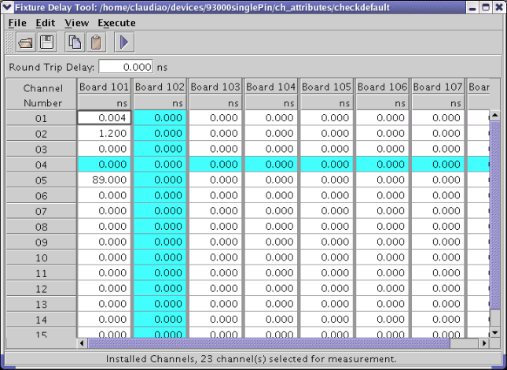

Select
Use the Select function to select the cell that is currently in focus. A cell that is in focus has a bold border. When you select the cell its background color changes to blue. You can also select a cell by holding down the CTRL key and clicking the cell.
Holding down the CTRL key and clicking a column heading selects the entire column. See the figure below.
Holding down the CTRL key and clicking a row heading selects the entire row. See the figure below.
A selected cell remains in the set of selected cells until it is deselected. See Deselect.
